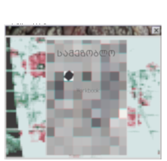

Artist, poets, and enthusiast often collaborate with Samezoblo. Write to samezoblo@planetmail.com if you wish to participate in the collage making, or discuss any ideas, or if you want to share images, or audio, or a poem.
They share material that resonates with the underestimated spirits of urban spaces; photos, poetry, or music that engulfs
their perception on overlook detail and fading elements of the city that slowly are becoming either archeology or plain absence.
Vol. 4, Vol. 8, and Vol. 10 are the collaboration exclusive editions so far.
In 2022 Samezoblo joined forces with Time4Pusteblume on a series of urban iniciatives that culminated in an exhibition in the Center for Contemporary Art of Tbilisi.
Samezoblo also had the opportunity to collaborate with Tbilisi based label CES Records on the release of the album Transitions by Isodrome feature in Vol 10.
The latest ongoing project is the Samezoblo Workbook Collage:
A digital copy of the zine has been made freely accessible to those
who enjoy doing collage and feel like playing around with the content of the zine reshaping it.
